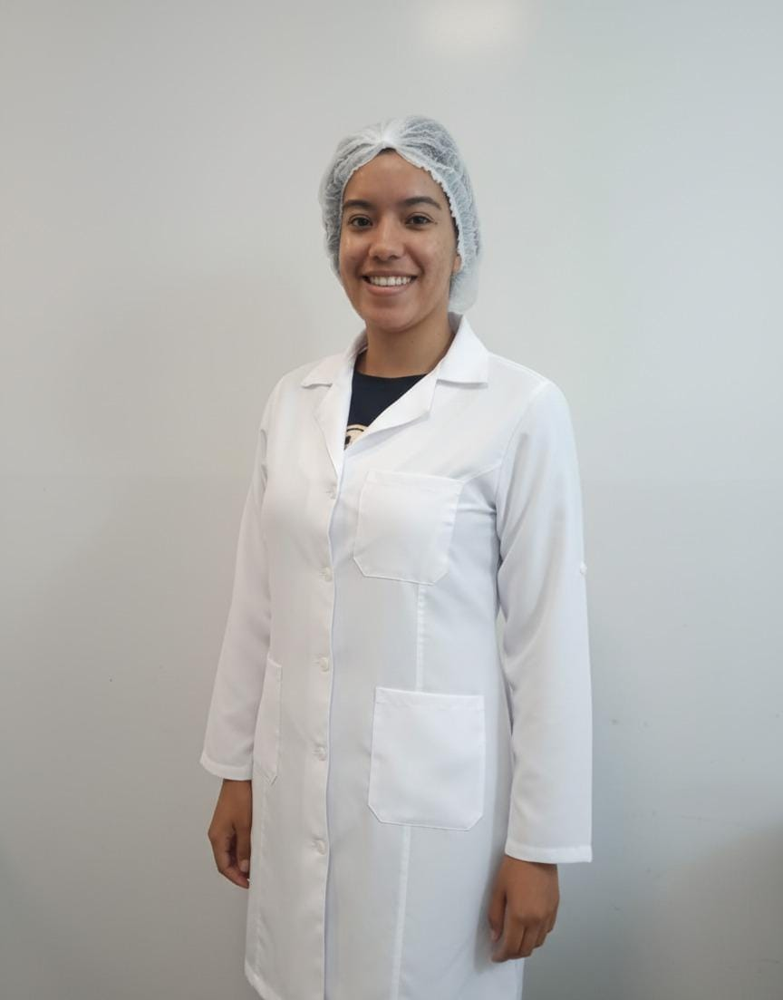
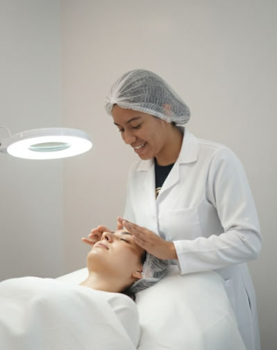

Limpeza de Pele
Remove impurezas, cravos e células mortas, promovendo renovação celular e deixando a pele mais saudável e luminosa.
- Ideal para todos os tipos de pele
- 60 a 90 minutos de procedimento
- Resultados visíveis imediatos
Tratamentos personalizados para realçar sua beleza natural, com cuidado, técnica e dedicação em cada procedimento.

Sou esteticista formada, apaixonada por cuidados com a pele e autoestima. Trabalho ajudando clientes a se sentirem mais confiantes e satisfeitas com sua aparência.
Meu objetivo é oferecer um atendimento personalizado, unindo técnicas modernas de estética com dedicação e carinho. Acredito que cada pessoa é única e merece um cuidado especial.

Esteticista
Certificada
Cada tratamento é adaptado às suas necessidades individuais para resultados reais e duradouros.
Remove impurezas, cravos e células mortas, promovendo renovação celular e deixando a pele mais saudável e luminosa.
Massagem suave que estimula a circulação linfática, reduz inchaço e proporciona aparência mais descansada e jovial.
Estimula colágeno e elastina com microagulhas, tratando rugas, cicatrizes de acne, manchas e flacidez com eficácia comprovada.
Formato personalizado que respeita a simetria do seu rosto, realçando o olhar e harmonizando toda a expressão facial.
Tratamento personalizado que combina técnicas e produtos específicos para suas necessidades, com resultados visíveis e duradouros.
Entre em contato pelo WhatsApp e escolha o melhor horário para você.
Avaliamos sua pele e indicamos o tratamento mais adequado ao seu perfil.
Procedimento realizado com técnica, cuidado e produtos de qualidade.
Acompanhamento e orientações pós-procedimento para manter os resultados.
Para garantir os melhores resultados, siga as recomendações específicas de cada procedimento.
A limpeza de pele remove impurezas, cravos, células mortas e excesso de oleosidade, deixando a pele mais respirável, luminosa e preparada para absorver melhor os ativos dos cuidados diários.
Pode haver leve desconforto na etapa de extração, especialmente em peles com cravos mais profundos. No entanto, o procedimento é bem tolerado pela maioria das pessoas.
Em média, de 60 a 90 minutos, dependendo do tipo e das necessidades da pele. O tempo inclui a avaliação, limpeza, extração e hidratação final.
Sim! A limpeza de pele é indicada para todos os tipos — oleosa, seca, mista ou sensível. Adaptamos o protocolo de acordo com as características de cada cliente.
Evite exposição ao sol por 48h, não use maquiagem nas primeiras 24h, aplique protetor solar diariamente e hidrate bem a pele com produtos suaves recomendados.
É uma técnica minimamente invasiva que utiliza microagulhas para criar microcanais na pele, estimulando a produção natural de colágeno e elastina. Trata rugas, manchas, cicatrizes de acne e flacidez.
Melhora a textura e firmeza da pele, reduz manchas e cicatrizes, diminui poros dilatados e linhas de expressão. Os resultados são progressivos e duradouros.
É aplicado anestésico tópico antes do procedimento, tornando a sessão bem confortável. Pode haver leve sensação de calor ou formigamento, que passa rapidamente.
De 3 a 6 sessões com intervalos de 4 a 6 semanas. Os resultados já começam a aparecer progressivamente a partir da segunda sessão.
Evite sol por 72h, use protetor solar de alta proteção, não utilize maquiagem por 24 a 48h, lave o rosto apenas com sabonete neutro e evite piscinas, saunas e exercícios intensos por 48h.
É uma massagem suave e rítmica que estimula o sistema linfático, favorecendo a eliminação de toxinas e líquidos retidos no rosto. Reduz inchaço e deixa a aparência mais descansada e jovial.
Reduz inchaço facial, melhora a circulação, diminui olheiras e bolsas, deixa a pele mais firme e proporciona uma sensação de leveza e relaxamento imediato.
Não, é um procedimento totalmente indolor e muito relaxante. As manobras são suaves e agradáveis, sem pressão ou desconforto.
Os resultados são visíveis já na primeira sessão. Para manutenção e resultados mais duradouros, recomenda-se uma sessão semanal ou quinzenal.
Sim! É ótimo fazer na véspera ou no dia do evento. O rosto fica visivelmente desinchado, descansado e com aparência mais radiante.
Fazemos uma análise do formato do rosto e da simetria facial para mapear o desenho ideal. Em seguida, removemos os pelos fora do traçado com pinça ou linha, finalizando com acabamento preciso.
Sobrancelhas bem desenhadas emolduram o olhar, harmonizam a expressão facial e criam um efeito de lifting natural, deixando o rosto mais jovem e equilibrado.
A remoção dos pelos pode causar leve desconforto, mas é rápida e bem tolerada. Com as sessões regulares, a pele se adapta e a sensação diminui.
Sim! Consideramos seus desejos e preferências, mas também orientamos sobre o formato mais adequado ao seu rosto para um resultado natural e harmonioso.
Entre 20 e 40 minutos, dependendo do estado atual das sobrancelhas e da técnica utilizada (pinça, linha ou henna).
Para a maioria dos procedimentos, a avaliação é feita no próprio dia. Para microagulhamento e protocolos faciais, recomenda-se uma consulta prévia para indicar o tratamento mais adequado.
Aceitamos dinheiro e PIX. Entre em contato pelo WhatsApp para mais informações sobre valores e pacotes.
Sim! Todo o espaço e os materiais utilizados seguem rigorosos protocolos de higiene e esterilização, garantindo segurança e bem-estar em cada atendimento.
É simples! Basta enviar uma mensagem pelo WhatsApp. Vamos te responder e encontrar o melhor horário para você.
Entre em contato diretamente pelo WhatsApp.
Agendar é simples e rápido! Entre em contato pelo WhatsApp e garanta seu horário. O atendimento é personalizado para as suas necessidades.
Estr. Takashi Kobata, 185 - Jardim Europa, Suzano - SP
(11) 96570-0354
@thalitaaapinheiro
Dicas de skincare, novidades, resultados reais e muito mais. Acompanhe e fique por dentro de tudo!